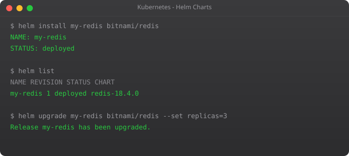

By this point in the series, you have written quite a lot of YAML. A Deployment, a Service, a ConfigMap, a Secret, maybe a PersistentVolumeClaim and an Ingress. For a single application, that can easily be six to eight separate YAML files. Now imagine deploying that same application to three environments — development, staging, and production — with slightly different configurations in each. You are now managing 18 to 24 YAML files, and one change to the application structure might require updating all of them.
This is the problem Helm solves. Helm is the package manager for Kubernetes. It lets you bundle all the YAML for an application into a single versioned package called a chart. You install the chart with one command, upgrade it with one command, roll it back with one command. And you handle environment differences through a simple values system rather than maintaining separate YAML files.
Helm is used by virtually every serious Kubernetes team. It is also how you install third-party software like Prometheus, PostgreSQL, and Nginx Ingress Controller. Learning Helm is not optional for production Kubernetes work.
# Linux
curl https://raw.githubusercontent.com/helm/helm/main/scripts/get-helm-3 | bash
# macOS
brew install helm
# Windows
choco install kubernetes-helm
# Verify
helm versionA chart is a Helm package — a collection of YAML templates and configuration. A release is a specific deployment of a chart in a cluster. You can install the same chart multiple times as different releases — for example, one "dev-postgres" release and one "prod-postgres" release. A repository is where charts are stored and shared. Artifact Hub (artifacthub.io) is the central public chart registry.
# Add the Bitnami chart repository (contains hundreds of popular apps)
helm repo add bitnami https://charts.bitnami.com/bitnami
# Update your local cache
helm repo update
# Search for available charts
helm search repo nginx
helm search repo postgresql
# Install nginx
helm install my-nginx bitnami/nginx
# List all installed releases
helm list
# Get status of a release
helm status my-nginx
# See all Kubernetes objects created by the chart
kubectl get all -l app.kubernetes.io/instance=my-nginx# See all configurable values
helm show values bitnami/postgresql
# Install with custom values via --set
helm install my-postgres bitnami/postgresql \
--set auth.username=appuser \
--set auth.password=secretpassword \
--set auth.database=myapp \
--set primary.persistence.size=10Gi# values-production.yaml
auth:
username: appuser
password: secretpassword
database: myapp
primary:
persistence:
size: 50Gi
storageClass: fast-storage
resources:
requests:
cpu: 500m
memory: 1Gi
limits:
cpu: 2
memory: 4Gi
replication:
enabled: true
readReplicas: 2helm install prod-postgres bitnami/postgresql -f values-production.yaml -n production# Upgrade to a new chart version or new values
helm upgrade my-nginx bitnami/nginx --set service.type=LoadBalancer
# Use --install flag to create if not exists (perfect for CI/CD)
helm upgrade --install my-nginx bitnami/nginx -f values.yaml
# View release history
helm history my-nginx
# Roll back to previous version
helm rollback my-nginx 1
# Roll back to specific revision
helm rollback my-nginx 3helm create my-app
# Chart structure created:
# my-app/
# Chart.yaml # Chart metadata
# values.yaml # Default configuration values
# templates/ # Kubernetes YAML templates
# deployment.yaml
# service.yaml
# ingress.yaml
# _helpers.tpl # Template helper functions
# NOTES.txt # Post-install notes shown to userapiVersion: apps/v1
kind: Deployment
metadata:
name: {{ include "my-app.fullname" . }}
labels:
{{- include "my-app.labels" . | nindent 4 }}
spec:
replicas: {{ .Values.replicaCount }}
selector:
matchLabels:
{{- include "my-app.selectorLabels" . | nindent 6 }}
template:
metadata:
labels:
{{- include "my-app.selectorLabels" . | nindent 8 }}
spec:
containers:
- name: {{ .Chart.Name }}
image: "{{ .Values.image.repository }}:{{ .Values.image.tag }}"
ports:
- containerPort: {{ .Values.service.port }}replicaCount: 2
image:
repository: nginx
tag: "1.25"
pullPolicy: IfNotPresent
service:
type: ClusterIP
port: 80
ingress:
enabled: false
hostname: myapp.example.com
resources:
requests:
cpu: 100m
memory: 128Mi
limits:
cpu: 500m
memory: 256Mi# Validate template rendering (dry run)
helm template my-app ./my-app
# Lint the chart for errors
helm lint ./my-app
# Install the chart
helm install my-release ./my-app
# Install with custom values (override defaults)
helm install prod-release ./my-app --set replicaCount=5 --set image.tag=2.0
# Uninstall a release
helm uninstall my-releaseYou can now deploy and manage applications at scale using Helm. The final two parts of this series cover the operational side of Kubernetes. In Part 11, we set up monitoring and logging — because you cannot operate what you cannot observe. You will install Prometheus and Grafana and start collecting metrics from your cluster and applications.
Helm bundles Kubernetes YAML manifests into versioned, configurable packages called charts. Instead of managing dozens of YAML files per environment, you manage one chart with a values file. One command to install, one command to upgrade, one command to rollback.
A Helm chart is a collection of parameterised YAML templates, a values.yaml with defaults, and Chart.yaml metadata. Charts can be published to repositories and installed by anyone. Artifact Hub hosts thousands of public charts for popular software.
install creates a new release. upgrade updates an existing one. Use helm upgrade --install in CI/CD — it creates or upgrades automatically, making pipelines idempotent regardless of whether the release already exists.
Use --set key=value for simple overrides or -f custom-values.yaml for complex configurations. Always use a values file for production — it is version-controllable and reviewable.
Run helm rollback release-name revision-number. View revision history with helm history release-name. You can roll back to any previous revision, not just the most recent one.